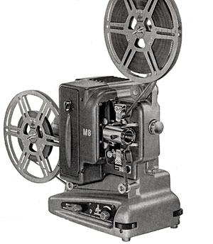
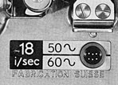

BOLEX M - 8R
8mm Projector
1950
- OVERALL DIMENSIONS: 13" x 6" x 12" (arm retracted, without reels)
- WEIGHT: 12 lbs (17 1/2 lbs with carrying case and accessories).
- CONSTRUCTION: Cast aluminum and steel. Painted with olive enamel finish on early models; Grey/silver finish on later models.
- REEL CAPACITY: Reel arms accommodate 400 ft reels. Upper reel arm folds downward and locks for storage; Serves as a carrying handle.
- THREADING: Rapid snap threading attaches film to sprockets; Lens assembly pivots outward for easy loading and unloading. Automatic loop former maintains the bottom loop even on damaged film.
- POWER: Voltage divider with built-in resistance, runs projector on 110-250v, 50-60 cycle AC or DC power supplies.
- LAMP: 110v 500 watt prefocus bulb. Modern replacement: CZX bulb.
- LENS: Interchangeable lenses; Usually supplied with a Kern 20mm f/1.6. Later models were supplied with a Kern 20mm f/1.3 lens.
- VARIABLE SPEED: 16 frames per second; adjustable for slower or faster speed. Motor or manual rewind. An audible warning device signals if the projection rate drops below safe limit.
- OTHER FEATURES: Direct drive motor operates the take-up reel; Forced draft ventilation and cooling; Framing knob adjusts the claw for vertical alignment in the gate; Front legs can be adjusted individually for height; An outlet on the rear of the projector can be used for plugging in a table lamp; Lamp housing door allows easy access to the projection lamp; Accessory carrying cases.
Notes and Comments
The Bolex M-8R projector was designed to run off a mains power supply higher than 125 Volts. It was also suggested as the model for those who intended to travel with their projector, as it contained a voltage divider with built-in resistance and could run off all mains supplies from 110 to 250 Volts.
Like the M-8, the first projectors had a textured olive finish, with black knobs. From 1956 onward, all models were finished in a two tone grey and silver enamel, and featured red control knobs.

In 1959, both models included a built-in stroboscope which allowed the projector to be adjusted to an exact speed of 18 frames per second.
Serial Numbers and Dates of Manufacture
The serial number on M8R projectors is located on the bottom of the base, near the rear; it can be used to determine the year in which it was manufactured. The table below lists the range of serial numbers allocated to the production run of both M8 and M8R models.
| # | Year | ||
|---|---|---|---|
| 310001 | — | 315000 | 1949 / 1950 |
| 315000 | — | 325000 | 1951 |
| 325000 | — | 330000 | 1952 |
| 330000 | — | 350000 | 1953 |
| 350000 | — | 360000 | 1954 |
| 360000 | — | 380000 | 1955 |
| 380000 | — | 400000 | 1956 |
| 400000 | — | 430000 | 1957 |
| 430000 | — | 455000 | 1958 |
| 455000 | — | 468000 | 1959 / 1960 |